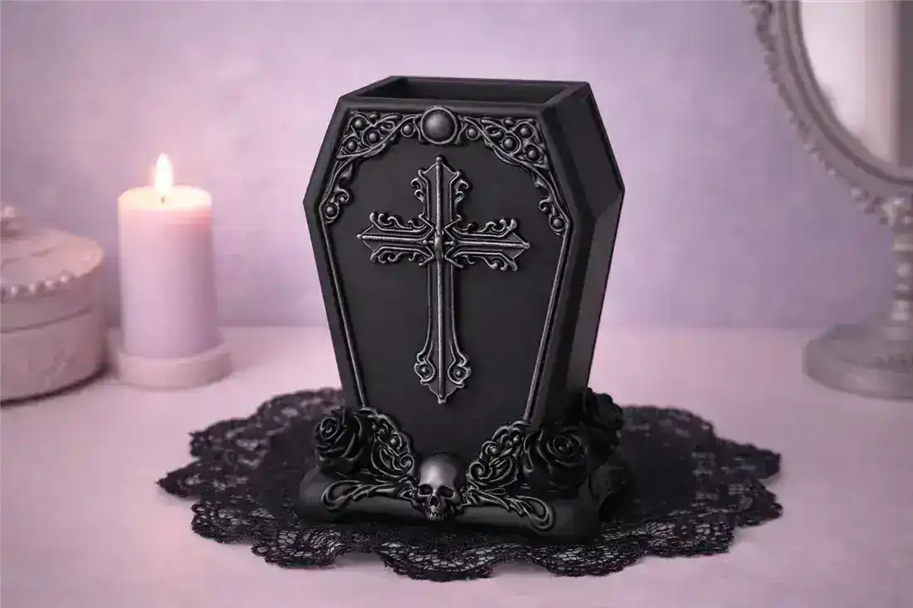
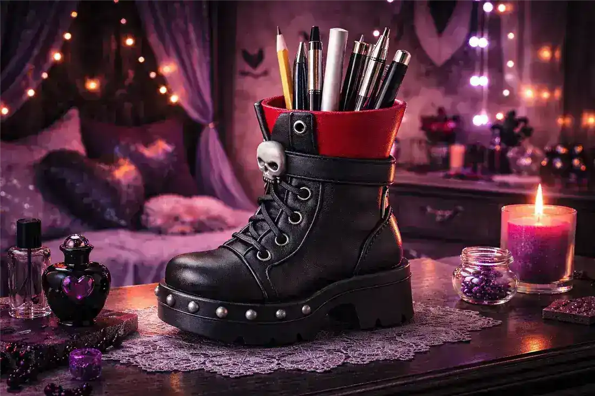
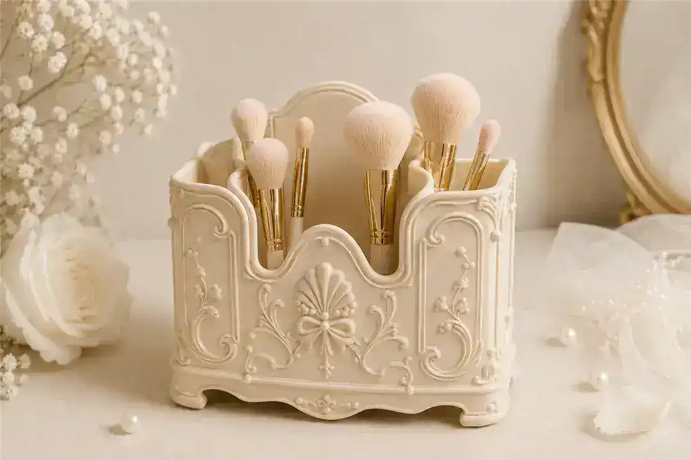
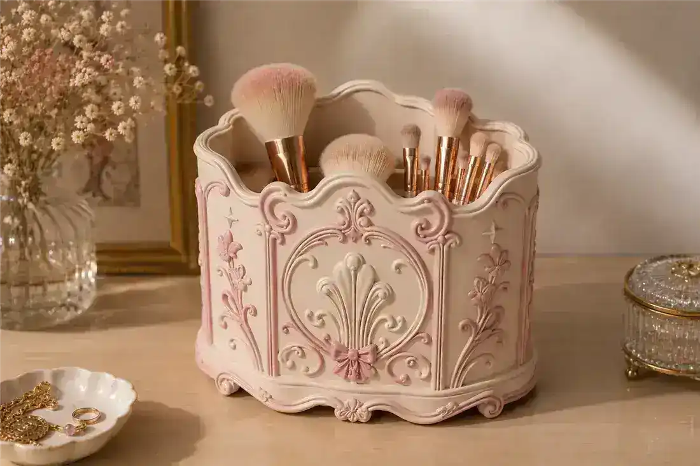
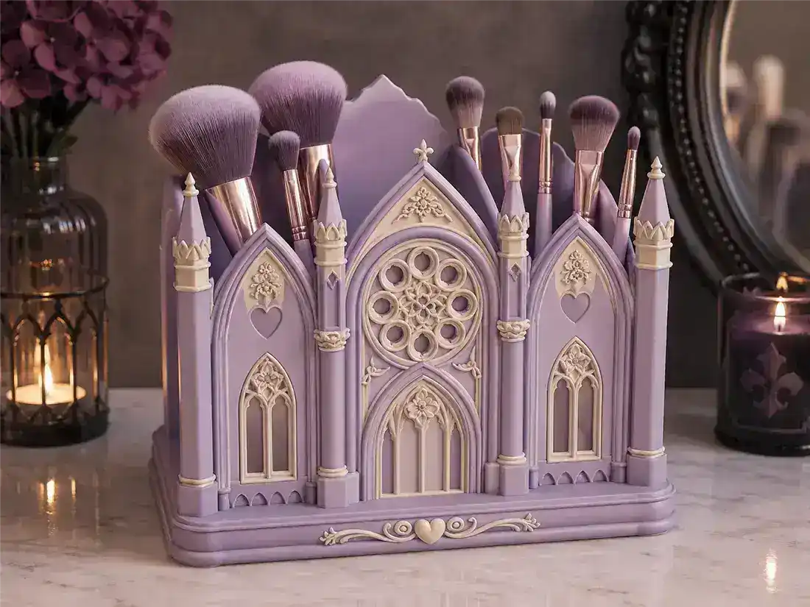
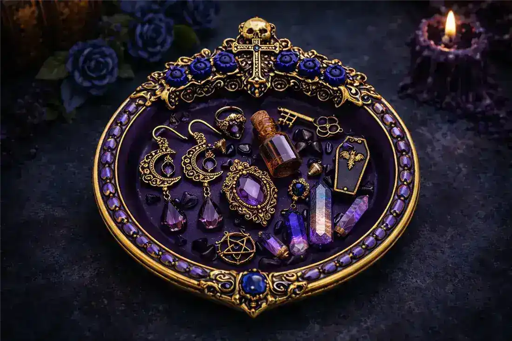
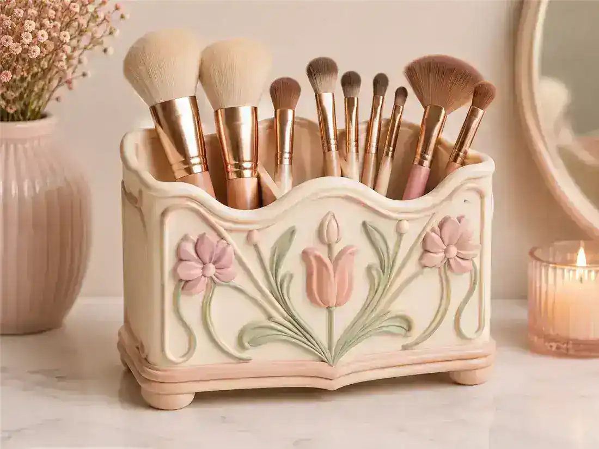
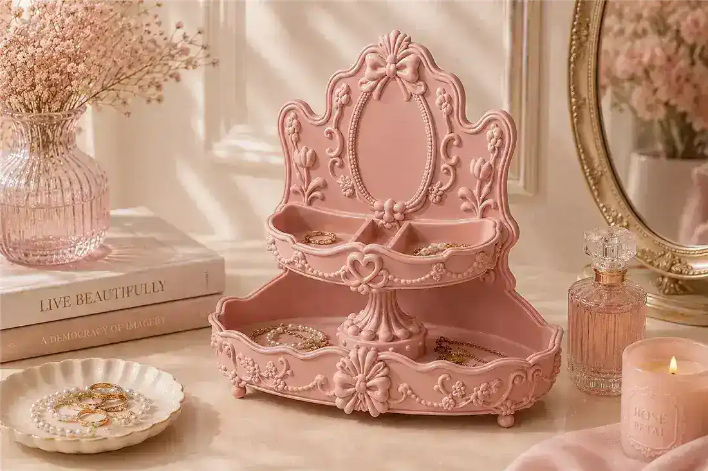

01 3D ModelGothic Coffin Makeup Brush Holder
A brush holder shaped like a little coffin for a vanity with a dark streak. It keeps tools upright and makes the daily routine feel like a ritual.
A moody little corner of the catalog for darker shelves and vanities. Coffin and cathedral brush holders, rococo scrollwork, and shadowed trinket dishes lean romantic-gothic rather than costume. Print in near-black or deep oxblood for the full effect.
8 printable models · direct links · free to browse№ 01 · Routine as ritual.

01 3D ModelA brush holder shaped like a little coffin for a vanity with a dark streak. It keeps tools upright and makes the daily routine feel like a ritual.
№ 02 · Laces, attitude, organization.

02 3D ModelA laced boot that cradles brushes with a rebellious edge. It is equal parts organizer and attitude for the gothic desk.
№ 03 · Old-world curves, modern print.

03 3D ModelA brush holder with ornate vintage curves for a romantic, old-world vanity. The scrollwork prints clean and looks far dearer than it is.
№ 04 · Candlelit bathroom energy.

04 3D ModelA refined rococo profile that turns a brush jar into a decor piece. It suits moody, candle-lit bathrooms and dressing tables.
№ 05 · Architecture in miniature.

05 3D ModelA brush holder with arched, cathedral-like detailing for a solemn, grand feel. It is architecture for the vanity in miniature.
№ 06 · Shadowed edges, treasured rings.

06 3D ModelA shadowed dish that catches rings and earrings with ornate edges. It is a small, dramatic rest for the things you never want to lose.
№ 07 · Organic lines soften the dark.

07 3D ModelA brush holder with flowing, nature-inspired lines from the art nouveau tradition. It softens the gothic lean with elegant, organic curves.
№ 08 · Trinkets become an altar.

08 3D ModelA lace-edged shelf that turns trinkets into a small altar of detail. Style it with rings and tiny treasures for a romantic, slightly gothic finishing touch.
Short, practical guides from the blog — the stuff worth knowing before your next print.